병목은 이제 코드가 아니에요
영상은 Claude Code를 만든 Boris Cherny 소개로 시작해, Anthropic이 공개한 'AI-native SDLC playbook'을 단계별로 훑어요. SDLC는 계획 → 설계 → 빌드 → 테스트 → 배포 → 유지보수를 도는 순환이에요. 한 바퀴를 돌면 다음 기능이나 버그로 다시 처음부터 시작해요.
에이전트가 나오기 전에는 이 순환에서 빌드가 가장 오래 걸리고 가장 비쌌어요. 에이전트가 그 구간을 확 줄여 놓았죠. 그러자 병목이 다른 단계로 옮겨 갔어요. Anthropic의 질문은 그래서 이거예요. 빌드는 줄였으니, 나머지 단계는 에이전트로 어떻게 줄일까요?
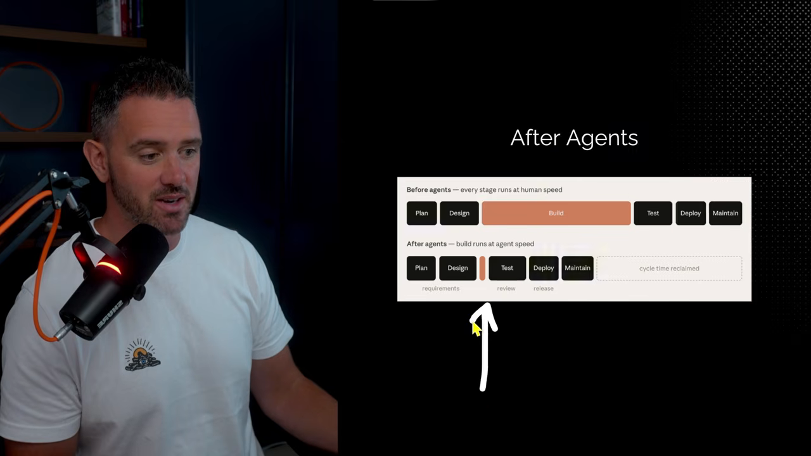
Code is no longer the bottleneck, it's your process.
이제 병목은 코드가 아니라 프로세스예요.
— 영상 00:32
계획: 에이전트가 묻고, intent.md에 적어요
예전 계획 단계는 요구사항을 모으고, PRD를 쓰고, 워크숍과 이해관계자 미팅을 거쳤어요. 새 방식에서는 에이전트가 사람을 인터뷰하는 데서 시작해요. 에이전트가 기능이나 버그를 완전히 이해할 때까지 계속 묻게 하고, 사람은 도메인 경험과 맥락을 최대한 쏟아내요.
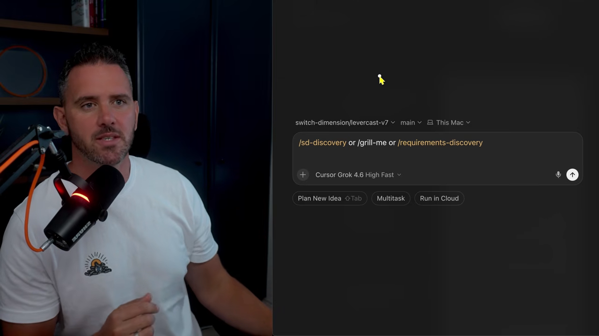
/sd-discovery, Matt Pocock의 /grill-me, Cursor의 /requirements-discovery. 영상 01:26에서 보기intent.md는 무엇을 담나요
인터뷰 결과는 intent.md에 적어요. 사람이 읽을 수 있고, 기계가 바로 쓸 수 있는 문서예요. 프로젝트에 intent 폴더를 만들어 그 안에 저장하면 돼요. 화자는 다크 모드 기능을 에이전트와 대화로 정리하고, 그 결과를 intent 폴더에 저장하는 예를 들어요.
여기서 단계마다 문서가 하나씩 이어지는 아티팩트 체인이 시작돼요. intent.md 다음엔 spec, 그다음엔 plan이 붙는 식이에요.
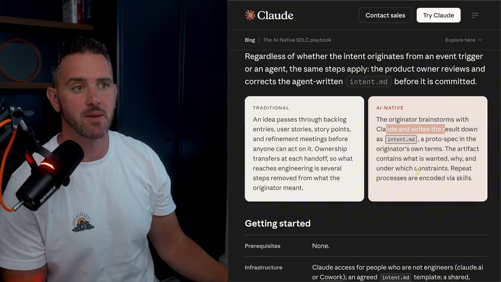
| 예전 SDLC | AI-native SDLC | |
|---|---|---|
| 시작 | 요구사항 수집, PRD, 워크숍 | 에이전트가 사람을 인터뷰 |
| 아이디어가 흐르는 길 | 백로그 → 유저 스토리 → 스토리 포인트 → 담당자 인계 | 아이디어 낸 사람이 Claude와 정리해 바로 intent.md |
| 누가 쓰나요 | 분석가·기획자 | 누구나(고객, PM, 개발자) |
originator와 백로그
intent.md를 만든 사람을 originator라고 불러요. 팀의 전문가일 필요는 없어요. 버그를 올리는 고객, 기능 아이디어가 있는 PM, 프로세스를 고치고 싶은 개발자 누구든 될 수 있어요. 에이전트가 쓴 내용은 originator가 다시 읽고 바로잡은 뒤에 확정해요.
쌓인 intent는 제품 오너가 백로그로 정리해요. 마크다운 파일 하나로 둬도 되고, Notion이나 Linear에 모아도 돼요. 화자는 에이전트에게 프런트엔드 여부, 작업 크기, 기능인지, 우선순위 같은 태그를 붙여 분류하게 하기도 해요. intent가 여러 종류로 늘면 파일 이름 앞에 접두어를 붙여 구분하는 방법도 소개해요.
워크플로는 팀마다 달라도 괜찮아요. 다만 한 번 정하면 자주 바꾸지 말라고 해요. 그래야 사람·에이전트·스킬이 같은 흐름 위에서 쌓여 가요.
설계: intent.md에서 spec.md로
intent가 커밋되거나 승인되면, 훅이나 정해 둔 절차로 spec을 자동 생성하자는 게 Anthropic의 제안이에요. 플레이북은 전용 스킬 대신 예시 프롬프트를 줘요.
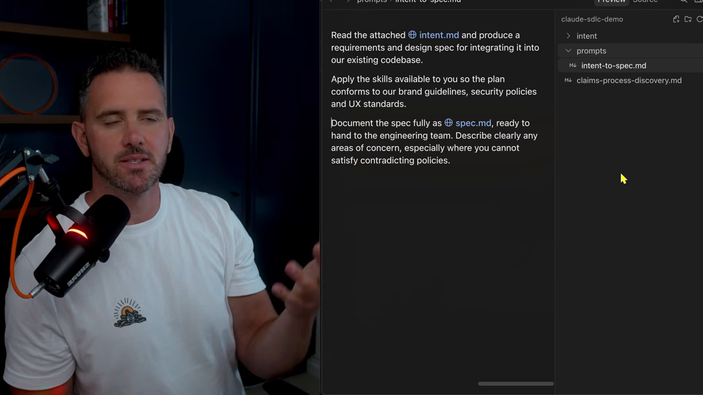
프롬프트의 뼈대는 세 줄이에요. 첨부한 intent.md를 읽고 요구사항·설계 spec을 만들 것, 쓸 수 있는 스킬로 브랜드 가이드라인을 지킬 것, 결과를 spec.md에 문서화할 것. 그냥 Cursor나 Claude Code의 plan mode를 써도 되고, 팀 방식에 맞춘 spec 스킬을 만들어도 돼요. 화자는 여기에 정답이 없다고 말해요.
거버넌스는 spec을 만들 때 걸어요
spec을 어떤 방식으로 만들든, 조직의 모범 사례가 반영돼야 해요. 그 기준은 AGENTS.md에 둘 수도 있고, 스킬 묶음에 담을 수도 있어요. spec을 만들 때 이 스킬과 정책이 실제로 지켜지는지가 거버넌스의 핵심이에요. 이 원칙은 spec뿐 아니라 체인의 모든 아티팩트에 적용돼요.
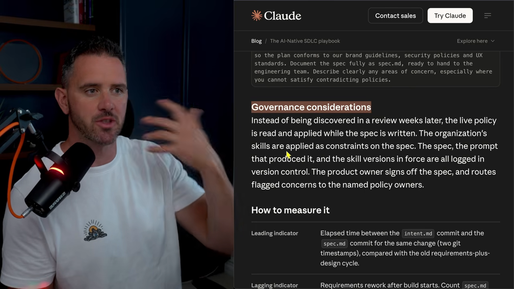
빌드: plan.md, auto mode, 훅
엔지니어가 intent와 spec을 Claude Code나 Cursor의 plan mode에 넣으면 plan.md가 나와요. Anthropic은 여기서 '이 변경으로 무엇이 깨질 수 있나'를 계속 캐물으라고 해요.
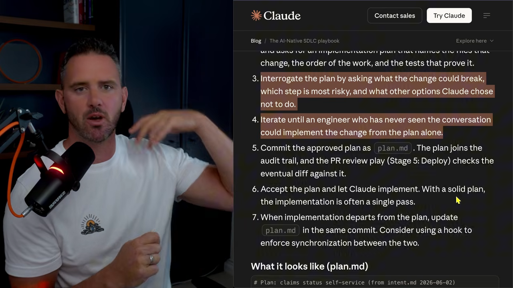
이게 중요한 이유가 있어요. 에이전트 하나가 SDLC 전체를 하지 않거든요. 단계마다 다른 에이전트와 서브에이전트가 맡고, 각자 새 컨텍스트에서 시작해요. 앞선 대화를 모르는 에이전트가 문서만 받아도 일할 수 있어야 해요. 그래서 문서 자체가 완결돼야 해요.
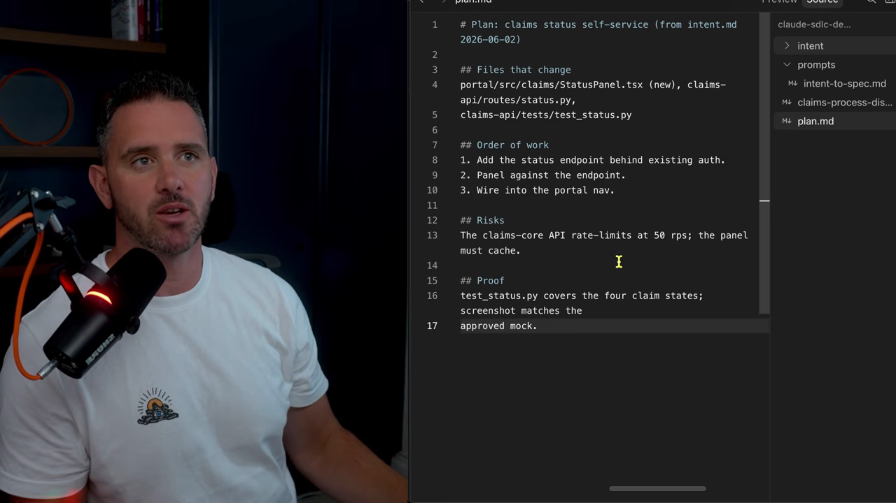
| plan.md 항목 | 담는 것 |
|---|---|
| Files that change | 바꿔야 할 파일 목록 |
| Order of work | 작업 순서, 일종의 할 일 목록 |
| Risks · Constraints | 위험 요소와 제약 |
| Proof | 성공 기준과 검사. 린트·테스트 같은 결정적 검사도 포함 |
엔터프라이즈에서는 거버넌스가 큰 몫을 차지해요. plan·intent·spec의 버전을 남기고, 누가 언제 손댔는지 기록해요. 화자는 많은 회사가 이 부분을 어려워한다고 해요. 그래도 선행·후행 지표를 추적하고 DORA 지표로 AI 도입 효과를 증명하려면 꼭 필요해요.
auto mode와 권한
빌드를 빠르게 하려고 Anthropic은 auto mode를 권해요. 화자는 조직마다 다르다고 덧붙여요. 통제가 엄격한 환경이라면 잘 다듬은 권한 세트로 시작해 점점 넓혀 가라고 해요. 에이전트가 쓸 도구, 접근할 웹 소스, 받아올 패키지에 대한 정책을 쌓고 Cursor나 Claude의 권한 설정으로 고정해요. 그러면 블라스트 반경을 좁게 유지하면서도 사람 없이 빨리 움직일 수 있어요.
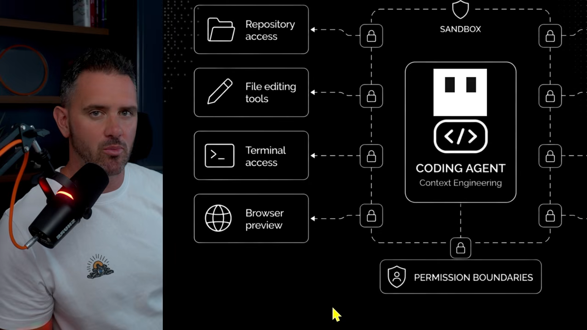
워크트리, 훅, 서브에이전트
플레이북은 워크트리도 권해요. 여러 에이전트가 서로 부딪히지 않고 동시에 다른 일을 할 수 있어요. 프로세스를 자율적으로, 궤도 위에 두는 핵심은 훅이에요. 구현이 끝나면 plan을 갱신하고, 특정 폴더 편집을 막고, 승인하지 않은 npm 패키지 사용을 막는 식이에요.
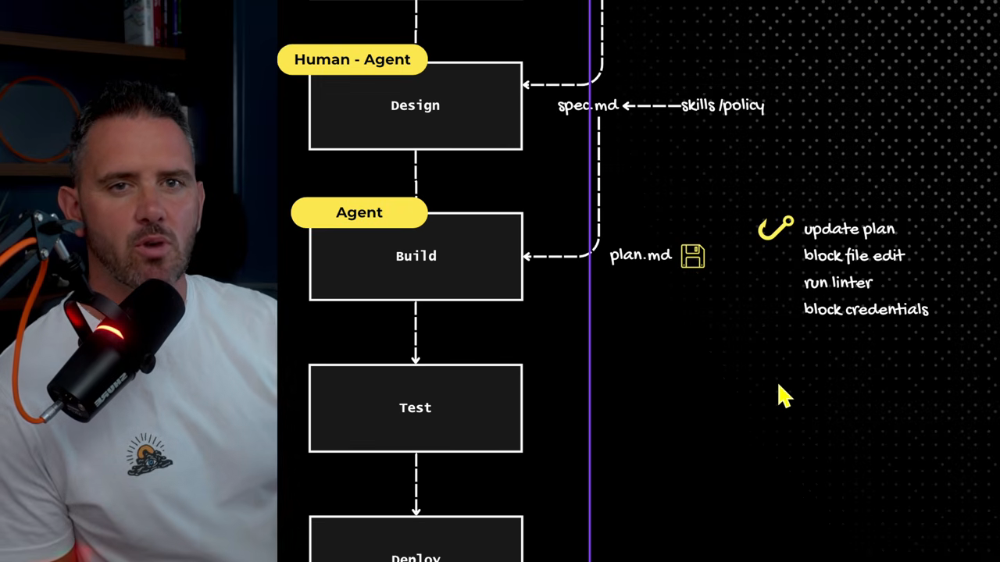
린팅은 오래된 기법이에요. 코드나 문서가 정해진 조건과 문법을 지키는지 코드로 검사하고, 결과는 통과·실패 둘 중 하나예요. 좋은 에이전트 하네스는 계획을 독립적인 작업으로 쪼개 서브에이전트에게 나눠 줘요. 병렬로 돌릴 수 있는 일은 워크트리로 나눠요. 화자는 이 기능이 Cursor, Claude Code, Codex에 이미 들어 있다고 말해요.
테스트와 배포는 에이전트가 먼저 봐요
예전 SDLC에서 테스트는 일을 붙잡아 두는 단계였어요. 작업을 올리고 테스터나 QA를 며칠 기다리고, 피드백을 받아 고치고, 다시 기다려요. AI-native SDLC에서는 사람이 보기 전에 에이전트가 할 수 있는 테스트를 최대한 해요.
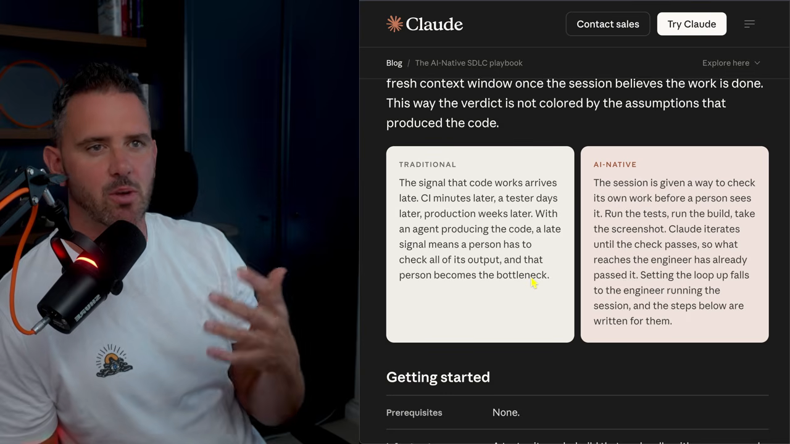
에이전트는 테스트를 쓰고 통과시키고, 린트와 빌드를 돌려 오류가 없는지 확인해요. 더 나아가 Playwright나 Cursor 브라우저로 소프트웨어를 직접 띄워 써 보고 스크린샷을 남겨요. 화자는 Cursor 클라우드 에이전트가 서버를 띄워 테스트하고 화면 녹화까지 주는 걸 예로 들어요. 테스트가 충분히 촘촘하면 사람 리뷰 시간이 크게 줄어요.
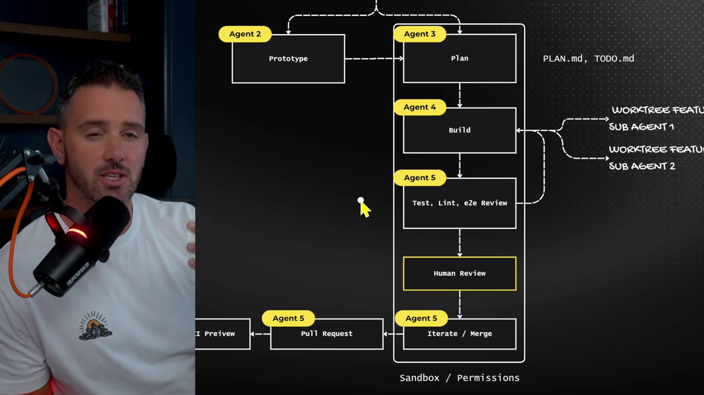
evals로 퇴보를 잡아요
Anthropic은 스킬을 바꾸거나 모델을 올릴 때마다 evals를 돌리라고 해요. 화자는 이걸 최적화 단계라고 불러요. 코드베이스에서 실제로 풀었던 과제 20개 남짓과 기대 결과를 모아 두고, 새 모델이나 새 스킬, 일하는 방식의 큰 변화가 생길 때 돌려 봐요. 그러면 SDLC 전체가 퇴보했는지 알 수 있어요.
배포: PR을 Claude가 먼저 리뷰해요
사람 리뷰가 끝나면 에이전트가 자기 브랜치나 워크트리에서 메인 저장소로 PR을 올려요. Anthropic은 CI 안에서, 또는 PR이 열릴 때마다 Claude가 정책과 보안 기준으로 리뷰하게 하라고 해요. 이 리뷰는 비동기로 돌아요. 리뷰 코멘트는 별도의 Claude Code 인스턴스가 받아서 처리해요. 각 인스턴스는 AGENTS.md, 스킬, 훅, 린트 설정에 따라 다른 정책을 가질 수 있어요.
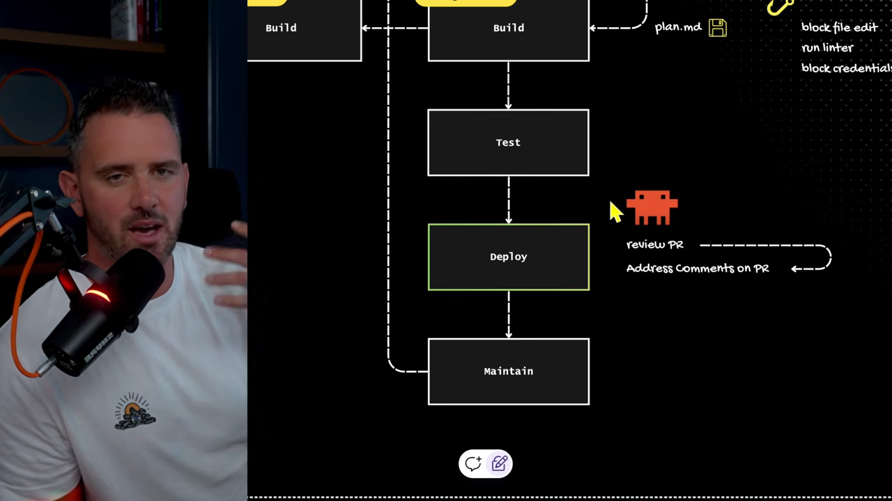
거버넌스 측면에서는 특정 권한, 특정 사람의 승인, 릴리스 게이트를 통과하지 않으면 배포를 막는 훅을 둘 수 있어요. PR이 끝나면 또 다른 에이전트가 보안·CI 프리뷰를 돌려요. 린트와 게이트 검사 같은 결정적 검사와 함께, Cursor Bugbot이나 Claude 보안 리뷰 같은 에이전트가 오류를 찾아요.
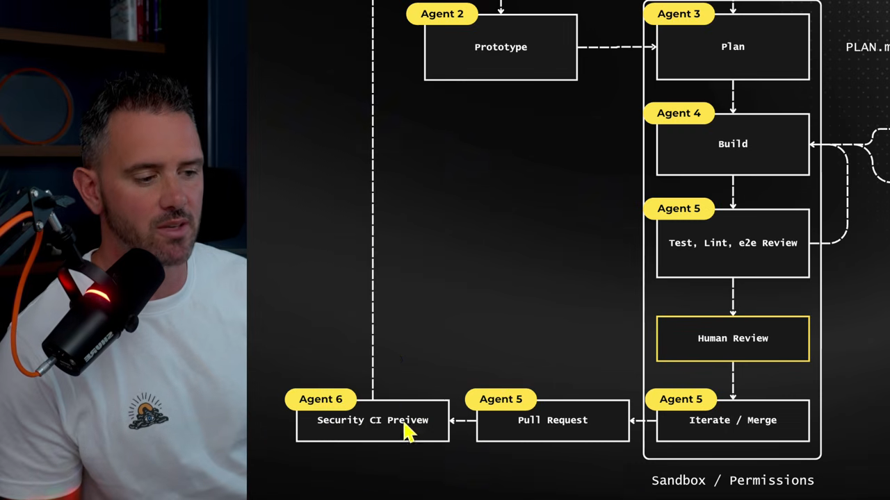
유지보수: 사람 없이 도는 루프
화자는 이 단계가 가장 '야심 찬' 부분이라고 말해요. 예전 유지보수는 사후 대응이었어요. 점심 먹다가, 당직 중에, 새벽 3시에 서버가 죽었다는 알림을 받아요. 백로그가 너무 많아 티켓 하나는 그냥 묻혀요.
AI-native SDLC에서는 장애, 새 티켓, Slack 메시지, 정해 둔 스케줄이 Claude를 깨워요. Claude는 비동기로 진단하고 대응해요. 그리고 발견한 로그나 받은 티켓을 바탕으로 스스로 새 intent.md를 써요. 유지보수의 끝이 다시 계획의 시작으로 이어져 루프가 닫히는 셈이에요.
실제로는 지키고 싶은 지표를 먼저 정해요. 테스트 중 페이지가 죽거나 API 사용량이 갑자기 늘면, 그게 에이전트를 깨워요. 에이전트는 진단하고 intent를 만들고 해결안을 내놓아요. 이 모든 게 사람이 컴퓨터 앞에 앉기 전에 끝나 있어요.
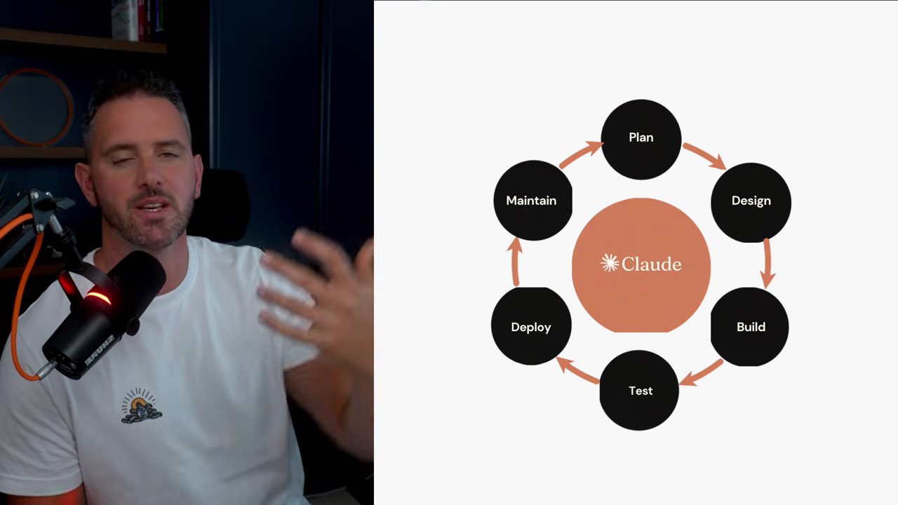
정답은 하나가 아니에요
이 문서의 전제는 에이전트를 빌드에만 쓰던 데서 벗어나 SDLC 전체에 쓰자는 거예요. 단계마다 사람이 쓰는 시간을 줄이되, 중요한 검토 단계에는 사람을 남겨 둬요. 단계마다 사람을 몇 명 둘지는 팀과 일의 위험도에 따라 정하면 돼요. 위험이 낮은 일이라면 에이전트만으로 돌려도 돼요.
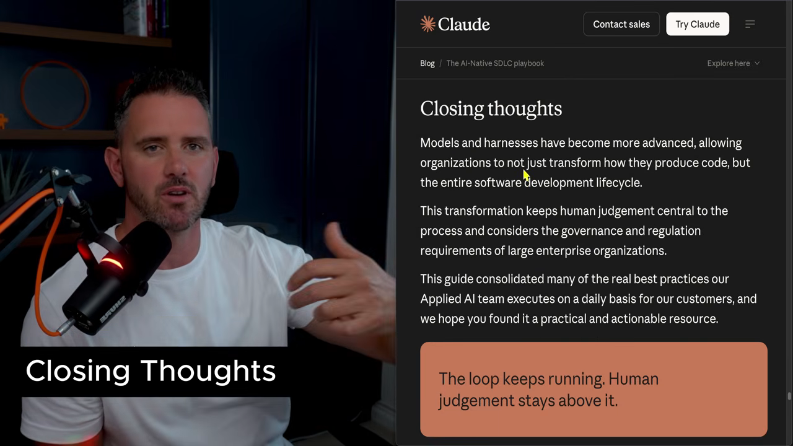
화자는 여러 회사의 AI SDLC를 도와 본 경험으로, 모두에게 맞는 방식은 없다고 강조해요. superpowers나 BMAD 같은 방식을 쓰고 있거나 자기만의 흐름을 만들었다면, 그걸 버리고 Anthropic 방식으로 갈아탈 필요는 없다고 해요. 쓸 만한 부분만 가져오면 돼요.